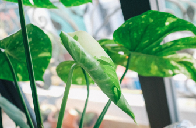

Plante og potte
Vælg en plante til lyset i dit hjem og en potte med hul i bunden.
Se planteprojektet →Start enkelt. Her er det nødvendige udstyr og det, du kan vente med.
Start dit første planteprojekt
Vælg en plante til lyset i dit hjem og en potte med hul i bunden.
Se planteprojektet →Brug en vandingsbeholder og en underskål eller skjuler, der kan tømmes.
Se planteprojektet →Ny jord og ompotning er kun nødvendigt, hvis planten har behov for det.
Se planteprojektet →